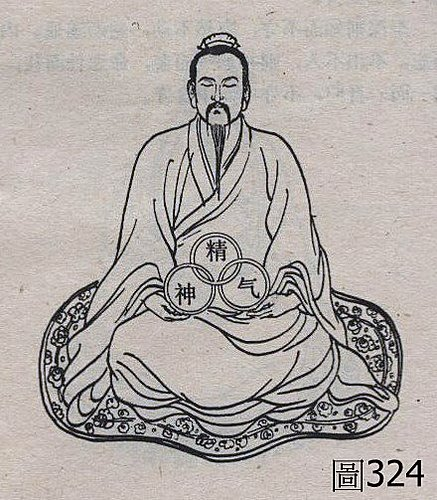
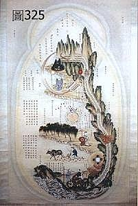
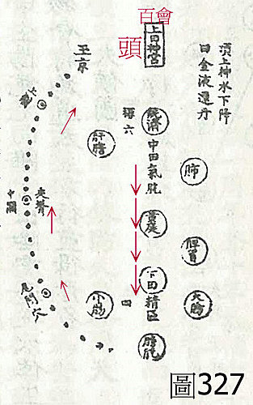

基礎概論 74：中醫與神通、相術、修道內證、氣功感應之間的問題（3）
作者：陳建元
上接基礎概論 73：中醫與神通、相術、修道內證、氣功感應之間的問題（2）
【道家行內丹術的目的】
道家的基本功課是性命雙修，性是德行，乃以慈悌忠孝仁愛信義和平為目，對外則行善積德，但要做到這些，需要有強壯之身體來支持和當後盾，故要修命，即讓身體強壯並延長壽命的意思，內容是外練運動拳術，內行丹術強壯身體，故內丹術之目的，乃在於求內壯延壽。
【或問：氣功丹術之原理】



答：
氣功內丹之原理，書上甚少說明，我在這邊大致上講一下。蓋人的意念和身體之間，並非完全無聯繫（目前科學認為無聯繫，或許日後會有發現而改觀），譬如情緒上的憤怒、高興、憂傷、擔心‥‥‥等情緒，皆足以導致身體上各大系統之產生變化，而〝意念專注〞也是情緒的一種，亦足以產生身體之變化，當意念守竅在某個部分而火候足夠的時候，用儀器亦可測量到該處之溫度上升，故意念久練之後，體內似有一團熱球，可隨著意念引導而活動，這團熱球不是自己在體內走，而是由意念引導它走的，內丹運行的路線如〈圖324〉、〈圖325〉（也叫內景圖）。特別要注意的是〈圖327〉（此圖取自邱處機的《大丹直指》）的情況，蓋道家周天運行之概念，並不等於醫家經絡圖上，實際針灸在用的任督兩脈連線穴位（即不是體表上的穴位），也從不運行於12正經，而是另有體系，背後是直接走脊椎和腦、在前面是直接貫走五臟六腑（即不是體表脂肪層上的任脈穴位，而是要更深入），意念守竅去引導那團熱球，基本上就是等於中醫裡面的〝灸〞一樣，具有溫補的效果，而對於一個避居深山，醫療資源不足又少運動的修道人來講，每日用這個〝灸〞來溫炙五臟和腦脊椎，即具有安定精神，加強大腦對於各器官調控的保健效力，故長久以來為道家所樂用。
但必須指出的是不能誇大，蓋人體病機有30餘字，虛、實、寒、瘀、痰‥‥‥，各種情況都有，並不是一律用〝溫補〞就行得通，故氣功內丹可視為加強身體素質之保養訓練，但沒辦法用來替代醫療〈如輔行訣（即輔助修行的要訣）‧陶弘景說：「凡學道輩，欲求永年，先須祛疾。或有夙痼，或患時恙，一依五臟補瀉法例，服藥數劑，必使臟氣平和，乃可進修內視之道。不爾，五精不續，真一難守，不入真景也。」（翻譯：陶弘景說：「我輩修道之人，想要順應天年而長壽，一定要先治療身體上的疾病，或是以前的夙疾，或是新患的一時疾病，找不到醫生時，可以先按照五臟補瀉所建議的方劑，先服幾帖試試看，要先臟氣平和，然後才能吐納內養強壯體質，不然的話，五臟精神不濟而萎靡，精神都很難集中了，又如何來行吐納內養強壯之功呢？」）。是有病需醫藥，沒病之後，乃可行內養或運動來強壯體質，庶以求天年〉，更不可能練了會成仙飛昇，這些都誇大了，其被誇大的原因，乃在於有人在守靜之後，眼前出現了各種的幻象，故以為如此能成仙成神，而對此抱著過度的期望，但其實這只是因為吐納守靜之後，大腦皮質在進入深度抑制之後，本來就會出現的現象，其原理和作夢是一樣的，其實這種情況在上述的一些正宗道經裡面有記載，告示後人那只是一種假景，不必過份的穿鑿附會，隨之而來隨之而去即可，而上述的各家道家丹士，也沒見過長生不死的，在這臭皮囊上，是沒辦法打造不死身的。
上述所言，才是歷代道家的真實情況，而到近代或現代，這些事情大都被養生大師或氣功大師，拿來渲染誇大做生意，而又基於現代武俠小說中，每每有打通任督兩脈、奇經八脈、12經脈等說法，所以自然把這些元素揉合在一起，因為看不懂道家是怎樣內運金丹的，但是看到很多學醫的人有針灸銅人，於是也就依樣畫葫蘆，自己去拼湊一個蓋世奇功出來當賣點，賣點大致上都是這些：
1. 上古氣功高人畫出體表經絡圖。【正解：體表經絡圖是歷代醫家之群體作品，而被養生大師、氣功大師拿去當賣點，並非氣功大師來教醫學家如何認識人體。】
2. 氣走經絡圖上體表的任督兩脈線，叫做小周天。
3. 氣走經絡圖上體表的12經脈線，叫做大周天。【正解：沒有中醫的經絡概念，蓋五臟是本，經絡是標，14經絡（12經脈 + 任督兩脈）之氣機，乃是五臟發出來的，沒有五臟當成根源來推動，焉14經絡？經氣又憑何而走？故古道家直接丹運脊椎、腦、和直貫五臟六腑來強化根源，並不是走體表的經絡線來做捨本逐末之舉，養生大師氣功大師沒讀醫書，看到針灸銅人就抄過去，故誤以為人體就是靠銅人身上體表的那些線在生存的（不知道銅人內部也有線，又不知道古代只有穴位本無線，線是元代滑壽，才開始連結起來的，又不知道五臟是本，經絡是由五臟衍生出來的線路而已），又結合武俠小說的說法，故講來講去，只知道在體表的14經絡線上面做文章。】
4. 大周天會出現特異功能而逐漸成仙。【正解：這只是守靜後，大腦皮質進入深度抑制後，會出現的現象，並不代表會有什麼特異功能，成仙能在天上飛的，到現在還沒看過，坐一年後，肚子會熱熱的，然後會看到這些幻景，坐30年後，還是肚子會熱熱的，還是看到這些幻景而已，而這些幻景並非實相，只是大腦把平常所收集的資料和見聞，於守靜時被激發而浮現而已，若誤以為這些幻景是什麼〝內景實相〞，把心力放在追求看這些東西，大謬矣﹗（就是古代的道家丹士，在外丹幻滅之後，沒有深入道藏做研究，轉而追逐內丹看幻景，誤以為如此就會成仙成佛而浪費一生的，也是大有其人。）】
之所以會把上面這些沿革寫清楚，主要是希望學中醫的人，不要在這邊走入死胡同，學中醫就是要從歷代經典、從脈證上老實去學，才會有成就，靜坐枯坐觀玄觀內證，是不可能學會什麼中醫的，如果靜坐吐納就能學會什麼中醫的話，不如把廟里長時間靜坐的和尚，叫過來取代醫師看病或寫醫書，豈不解救蒼生？事實上，和尚生病都還要排隊到醫院看病呢！醫藥之使用，又豈是靜坐可得？天下豈有白吃的午餐！
【按：在概念上，不管是要按照密宗瑜珈的中脈七輪來走，還是要按照道家的周天來走，還是要按照近代的表層經絡來走，基本上，都只能當成一種健身法來看待而已，也就是說確實會有類似用〝灸〞，去灸那些地方的效果，但若說練了會通神，這都誇大了，另外，就是要知道人體內的大小經絡縱橫而四通八達，經氣都是雙向流通的，事實上並不是按照我們一般通用的12經絡順序銜接流注圖，整個就形成一個沒有缺口的圓圈，頭尾相接的以固定的方向在運行，所以當你用意念去導引時，不管是順著走、橫著走、倒著走、螺旋走‥‥‥，都可以通，也都可以隨自己的喜好，以意念自由的去劃出自己想要的途徑，效果則都是一樣的，類似用〝灸〞，去灸那些意念所灌注的途徑，但〝灸〞雖有保健效果，還是要以辨證病機為前提，在不精脈證，沒有判斷病機的前題下，譬如上焦火旺之人，氣功師卻教把氣血意念集中在腦部想衝關，結果氣血過旺，造成血管暴裂中風，變成練功致殘的也時有耳聞，是內養運動雖有某個程度的保健之效，還是要先評估身體的病機狀況為佳。】
【又按：現代養生大師或氣功大師，每每受武俠小說電視劇之誤導，把精力集中在12經絡或14經絡上面做文章，這也不正確，蓋要運氣之前必先築基，不築基，不先氣旺，在氣虛的情況下，意念導著氣四處走，只是空轉，越轉越虛而已，甚難得益，反不如簡單的養生，徐徐綿綿吐納養氣，不去著意順其自然即可，收穫也佳。】
【祝由、符籙、咒法、雷法】
陳老師雖力陳以靜坐氣功來學中醫行不通，一定要以諸家經典、外候脈證來學才行的通，但是聽說古代有〝祝由〞一科，似乎用類似神通氣功的方法來治病，這又該如何說？
答：
【祝由、符籙、咒法、雷法】又是一個區塊，練氣功的不一定有接觸過【祝由、符籙、咒法、雷法】，習【祝由、符籙、咒法、雷法】的也不一定有練過氣功，有些古道家或道教，是同時學習之。
在文獻上，《馬王堆漢墓帛書》裡，即有記載比較簡單的〝祝由〞內容和方法，在《內經‧素問‧移精變氣論》中也有記載，說明古人治病唯有祝由一途而已，在歷代官方醫療機構中也有配置，譬如隋有祝禁博士，唐太醫署四科中有咒禁科、咒禁博士，到元明之際，太醫院設立十三科，祝由科是第十三科，到了清朝，在官方醫療編制中，雖廢除祝由一科，但其實不是真廢除，而是清朝以薩滿教為大宗，故鬼神祈禳齋醮之事，自然以薩滿教為之，不用中原的方法來處理也。而歷代醫書中也有紀錄，譬如宋朝的大型官方書《聖濟總錄》卷195～卷197，即記載符300餘道，唐《外台秘要》也有符禁門，唐孫思邈《千金翼方》卷29～卷30，即是禁經，明楊繼洲《針灸大成》卷9有〝針邪秘要〞的方法，〈圖316〉，並有太乙靈符一道，看書中所言，其實是用來處理〝鬼祟脈〞這類的卡陰狀態的，（參看脈理醫理學 55：鬼祟脈），所以這類【祝由、符籙、咒法、雷法】，並非沒有沿革的。
我的學習環境較特殊，有學到這些區塊，每尊神明的符令格式是不一樣的，〈圖317、318、319、320〉是我師父的格式，〈圖317〉是用來取代〈圖316〉的格式的，其功能一樣。
之所以提到【祝由、符籙、咒法、雷法】，是要用來講清其界線和範圍的，免得更多學中醫的人，走入死胡同而不自知，知識份子的弱點，就是對於一般的民俗王爺媽祖信仰，因為害怕被貼上〝迷信〞的標籤，於是不敢去探討，不敢探討，卻又好奇，於是便讓這些養生大師、氣功大師、宗教家、民俗大師，有了誇大解釋，漫天喊價、畫鬼最易的空間。
台灣不乏宮廟，這些無形之事也可以探討，但其中誇大胡說八道的也很多，所以也是要注意，很多人會想探討這些東西，是想說是否能借無形力量之加持，是否能學會神通，而能自由發揮，想施捨給誰就施捨給誰，不想施捨給誰就不施捨給誰，生殺之權掌握在我的手中，受到眾人的崇拜，多威風啊！事實上，這種事情是辦不到的，這是因為神明世界有神明世界之律法，是無法漫天喊價的，我們從一個地方來看，便可以看出端倪：有時候我們看報紙上說，某某案件警察久辦無功，尋求城隍爺幫忙後，冥冥中如有神助，很巧合的就破案了，但如果每次都去求城隍爺，每次都會破案嗎？答案是否定的，理由為何呢？其實陰界有陰界的律法，不是一般人所知道的那麼自由，陰界管陽界的事，都有個別授權的分寸和個案授權的範圍，譬如城隍爺，等同人間的派出所，人往生之後，一般先來這邊報到，所以城隍爺對於每個人的背景，是掌握齊全的，以祂的職權，要調哪一個人是陽世通緝犯的資料，當然很簡單，但祂可以把這些通緝犯的資料公開，通通抓起來關嗎？這是不行的，如果城隍爺執意這麼做，那陽間的警察做什麼呢？陽間司法機關的審判何用呢？豈不變成陰陽大亂，擾亂陽世？所以往往只有報應到了或是特殊情況的個案，神明才會被授權可以介入陽間的事情。
而神明看病或是祝由這些事，和抓通緝犯這件事情是一模一樣的，陽人生病，自有配置陽世的醫師來處理，除非有個別或特殊的的授權範圍，否則神明不會隨意出手，就是出手，也不是通通有大獎，而是會依平日功果來出手三分、五分、七分不等‥‥‥，並不會出全力。而若是遇到因果或是業報的問題，三界的神明，一般都不能介入，為什麼呢？因為因果是已經定案了而在執行的過程，就好像說法院已經三審定讞了，已經在執行徒刑了，除非是翻案，否則無法更改或停下執行徒刑，業報雖然彈性較大些，但仍是類似，那如果你是正式被策封的神明，或是屬於中央機關的神明的話，只會更遵守這些過程，你能說這人犯罪被關三年，那我是神明，你是我的信徒或我們有私交，我就允你免刑，可以這樣做嗎？當然是不行，否則豈不像土匪頭子，只論立場不論是非？或是窮人沒錢供奉就越窮，富人有錢供奉就越富？相同的，有的人的業報是註定要纏病多年，或是罹患絕症慢慢來拖磨，神明雖然看你可憐，但能介入的甚微，否則豈不變成對抗公權力，規矩全毀？所以神明能介入的事，其實非常有限，最大宗的是處理收驚、卡陰、犯煞、祭掩、‥‥‥，這些不屬於陽世人事的事情，另外就是教化自己的弟子行善積德，有積善因才會結善果。
人就是人，既然生而為人，就要專注在人可以做的事情上，做好人在做的事，不管你過去是那個神明來轉世的，今世來為人，就一律平等了，沒吃飯也一律掛掉，今天就是孫思邈、仲景來轉世，答案也是一樣的，過去的記憶還是會被刪除掉，然後才轉世，轉世為人後（雖然刪除記憶，但這些大將在潛意識裡，對醫學的學習力和穿透力都很強），就是大家一律平等來學習了，這就是天律（試想：如果孫思邈、仲景一出生還帶著以前的學識來和你競爭，這樣你競爭得了嗎？起頭點公平嗎？），知道此理，就知道不可能靜坐通神，然後就變得很懂醫術（歷代名醫下凡，都還要先刪除記憶，從頭平等來學了，還能讓你我一般人，有特權不用學，靜坐通神就會？）。醫理醫學的研究，不能依賴神，而是要依賴人，是「人能弘道，非道弘人」，自己要去努力研究，踏實觀察比對，找出規則大家都能用，這比較實際，把希望寄在神明身上，礙於陰律天律各有規則，終究渺茫一場空；或是不踏實來研究，以為天天坐禪練氣，有一天就會通了，或是神明就會來教，然後醫術就會很好，這都是不正確的，也沒看見有人這樣成功過。有的人說陳老師，你的機緣比較特殊，我的回答是：機緣也要先讀幾百本醫書，否則就是幾個神一起來，也寫不出什麼東西，醫書不讀，溝通有代溝，神明和你也只是雞同鴨講而已，到現在為止，試問一下，你有看到哪一宮廟寫出什麼很重要的醫學書嗎？由此就可知道，天律極為嚴苛，否則把一票歷代名醫通通叫下來寫醫書，豈不光復中醫？能這樣做嗎？不行的，這叫擾亂陽世，會嚴重干擾或破壞陽世本有的醫療架構系統，所以天律嚴苛，很多事情是要申請報備而審核通過才能做的，並不是隨自己高興，想做什麼就做什麼。
所以說祝由宮廟這些東西，都是有範圍的，不能漫天喊價，神明就像銀行人員，祂可以幫你查查你的帳戶，告訴你還剩多少存款？但祂可以隨意的幫你增加或減少嗎？這是不行的，醫理醫論你要自己去學，不懂的可以問，但枯坐就能憑空獲得，這是不可能的；祝由之術雖存在，但陽世既然有配置醫師，就是要你生病時去看醫師，去疾病的面前學學謙卑，去疾病的面前學學低聲下氣，以削削平日的志得意滿，囂張跋扈，一律以祝由來處理，豈不剝奪了應有的學習過程。所以說這就是要小心了，很多的宮廟人員都亂搞、誇大、假傳聖旨，誇說不但可以幫你查帳戶，還可以幫你加存款；醫書不用看不須研究，靜坐就能通醫術；生病不用看醫師，我宮廟幫你灌灌氣就OK了，聽到這些話，自己要去思考去過濾，想想看合不合理，否則很容易被唬弄得團團轉。
【或問：陳老師，我也想供奉神明，不知道是否在學醫的路上有助益？】
答：
天地間有些事情很難思量，隨緣即可，有的時候自然會來，沒有也不必強求，神明並不是土匪頭，並不是拜就有，也不是信我才有獎，不信我者則不保佑，重點並不在於信不信神明，而是在於你平常都在做什麼事？自然會有護佑，仁者為仁，仁字由二人所組成，也就是說您所做的事，有沒有實質的去助益到他人？生命的意義，在於創造宇宙繼起之生命，而不是晚上閉眼一思，從早上開眼，忙了一天到晚上就寢，思一日所為之大大小小事，一絲一毫都是為己利所做所設想的，沒有一點一滴是為別人做為別人想的，日復一日，一日是如此，一年也是如此，一輩子也是如此，甚至幾世如此，如此又何談什麼龍天護佑？遠矣！是誠如府城隍廟對聯所云：「作事奸邪，盡汝燒香無益！居心正直，見我不拜何妨？」
【引用請先來信告知徵求同意，若有涉及販售營利等商業行為，版權所有拷貝盜用必究。】
【藥王脈學講壇】http://blog.xuite.net/drjychen/twblog